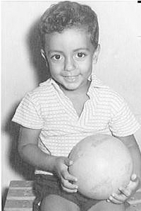
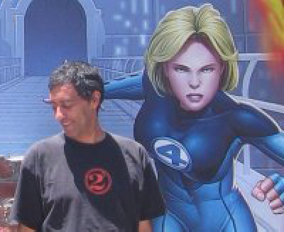
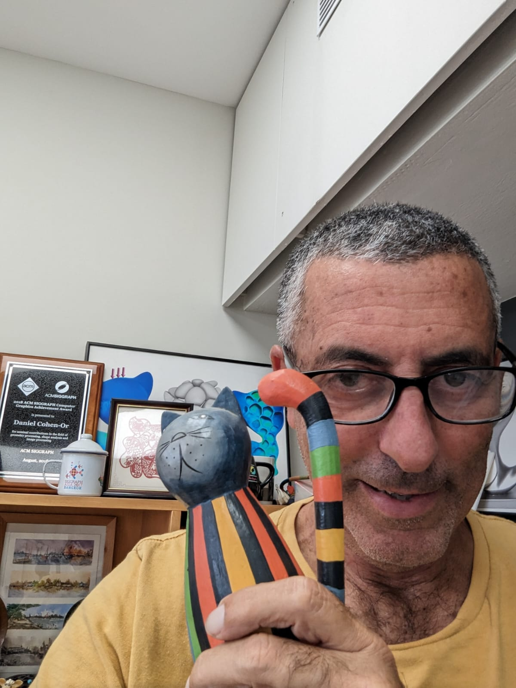

Visual computing · Generative models
Daniel
Cohen-Or
Professor of Computer Science at Tel Aviv University and the Isaias Nizri Chair in Visual Computing.



Selected recent work
Ideas in graphics, vision, and generative models.
About
Research at the intersection of graphics, geometry, and learning.
I am a professor in the School of Computer Science at Tel Aviv University, an ACM Fellow, and the Isaias Nizri Chair in Visual Computing. My research interests are in computer graphics, visual computing, geometric modeling, and generative models.
I received B.Sc. degrees in Mathematics and Computer Science and an M.Sc. in Computer Science from Ben-Gurion University, and a Ph.D. in Computer Science from Stony Brook University.
My recognitions include the ACM SIGGRAPH Computer Graphics Achievement Award (2018), the Eurographics Distinguished Career Award (2020), the Eurographics Outstanding Technical Contributions Award (2005), and the People’s Republic of China Friendship Award (2012).
Recognition